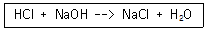

인쇄기능사 (2011-07-31 기출문제)
1과목: 임의구분
1. 종이컵, 쥬스컵 등의 식품 용기에 많이 사용되는 표면 가공법은?
- 광택니스칠
- 비닐필름 입히기
- 셀룰로이드 입히기
- 왁스칠
(정답률: 알수없음)

2. 10분 동안에 600[C]의 전기량이 이동했다고 하면 전류의 크기는 몇 [A]인가?
- 1
- 6
- 10
- 60
(정답률: 알수없음)
3. 200V, 500W 전열기의 저항은 몇 Ω 인가?
- 5
- 20
- 80
- 100
(정답률: 알수없음)
4. 콜로타이프 인쇄에서 사진의 농담 계조는 주로 무엇으로 나타내는가?
- 망점 면적
- 망점 깊이
- 젤라틴 입자
- 스크린 메시
(정답률: 알수없음)
5. 일반적으로 사전 또는 두꺼운 단행본 등에 사용되는 제책방식으로 가장 바람직한 것은?
- 호부장
- 양장
- 바인더
- 중철
(정답률: 알수없음)
6. 리트머스 시험지에서 pH 9~10은 무슨 색으로 나타내는가?
- 노랑
- 파랑
- 빨강
- 오렌지색
(정답률: 알수없음)
7. 색상과 파장과의 관계가 옳게 짝지어진 것은?
- 400 ~ 500nm : Red
- 500 ~ 500nm : Blue
- 600 ~ 700nm : Green
- 400 ~ 700nm : 가시광선
(정답률: 알수없음)
8. 이론상 다음 반응이 완결되면 pH는 얼마가 되는가?

- 5
- 7
- 9
- 11
(정답률: 알수없음)
9. pH에 대한 설명으로 틀린 것은?
- 수소이온 지수라고도 한다.
- 대부분의 용액은 pH 값이 0에서 14까지 이다.
- pH는 잉크의 건조와 관계가 있다.
- pH=log[H˖]로 나타낸다.
(정답률: 알수없음)
10. 종이가 발명되기 전 서양에서 사용한 필기 재료는?
- 양피지
- 노루지
- 한지
- 아트지
(정답률: 알수없음)
11. 다음 중 평판 오프셋 인쇄의 특징이라고 볼 수 없는 것은?
- 수성 잉크를 사용
- 화학적 인쇄 방법
- 고속 인쇄가능
- 축임물을 사용
(정답률: 알수없음)
12. 다음 중 파장이 가장 짧은 것은?
- 빨강
- 주황
- 보라
- 초록
(정답률: 알수없음)
13. 마젠타 잉크와 옐로 잉크를 같은 양으로 혼합했을 때 나타나는 색은?
- 적(Red)
- 녹(Green)
- 청자(Blue-Purple)
- 먹(Black)
(정답률: 알수없음)
14. 일반적으로 제책(book binding)을 크게 3가지로 분류하는데 가장 관계가 없는 것은?
- 양장
- 반양장
- 호부장
- 반호부장
(정답률: 알수없음)
15. 망막의 감광세포 중 빨강, 노랑, 파랑 등 유채색의 차이를 볼 수 있게 하는 것은?
- 간상체
- 추상체
- 글라스체
- 수정체
(정답률: 알수없음)
16. 국전지의 16절은 4.6 전지의 약 몇 절에 해당하는가?
- 8
- 16
- 25
- 32
(정답률: 알수없음)
17. 다음 용제 중 방향족 탄화수소는?
- 석유
- 가솔린
- 나프탈렌
- 미네랄스피릿트
(정답률: 알수없음)
18. 용제를 비점에 의해 분류할 때 저비점 용제가 아닌 것은?
- 염화부틸
- 아세톤
- 벤젠
- 부틸셀로솔브
(정답률: 알수없음)
19. 그라비어 용 백선 스크린은 흰 선과 검은 선의 비율은?
- 1:2.5 ~ 1:5
- 1:5.5 ~ 1:10
- 1:15 이상
- 1:20 이상
(정답률: 알수없음)
20. 고무 블랭킷의 구비조건이 아닌 것은?
- 복원성이 좋아야 한다.
- 화학 약품이나 용제에 내성이 있어야 한다.
- 종이가 블랭킷에 잘 붙는 접착성이 좋아야 한다.
- 잉크의 전이성이 좋아야 한다.
(정답률: 알수없음)
2과목: 임의구분
21. 다음 평판 제판 공정 중 감광막의 두께와 빛 쬠 시간을 일정하게 유지하기 위해 갖추어야 할 조건이 아닌 것은?
- 감광액의 점도
- 판 재료 표면의 수분 함량
- 회전 도포기의 회전 속도
- 감광 판재의 크기
(정답률: 알수없음)
22. 스크린사 매기 방법 중 대각선매기(바이어스식)를 하는 이유와 관계없는 것은?
- 작은 문자
- 재료 절약
- 정밀한 판
- 다색 인쇄
(정답률: 알수없음)
23. 잉크의 조성 중 색료에 속하지 않는 것은?
- 유기안료
- 유용성 염료
- 무기안료
- 가소제
(정답률: 알수없음)
24. 종이 광택과 관계가 있는 종이의 특성은?
- 인장강도
- 사이즈도
- 인열강도
- 평활도
(정답률: 알수없음)
25. 축임물의 조성 중 잉크 이김 롤러에 잉크가 묻지 않는 잉크 탈막(stripping) 현상을 방지하는 역할을 하는 것은?
- 질산염
- 인산염
- 중크롬산염
- 증류수
(정답률: 알수없음)
26. 평판 인쇄할 때 축임물의 역할에 대한 설명으로 틀린 것은?
- 비화선부에 잉크 부착을 방지한다.
- 화선부를 선명하게 한다.
- 판면의 온도를 일정하게 한다.
- 일반적으로 축임물은 알카리성이다.
(정답률: 알수없음)
27. 어두운 곳에서는 절연체의 성질을 띠고 밝은 곳에서는 도체의 성질을 띠는 물질은?
- 감광성 물질
- 반도체 물질
- 광전도성 물질
- 서모크로미즘 물질
(정답률: 알수없음)
28. 다음 금속판 재료 중 가장 친수성 강한 금속은?
- 알루미늄
- 은
- 구리
- 수은
(정답률: 알수없음)
29. 멜라민으로 도장된 알루미늄 판에 적합하지 않는 잉크는?
- 열경화성 잉크
- 아르마이트 착색 잉크
- 1액형 멜라민 잉크
- 2액형 에폭시 잉크
(정답률: 알수없음)
30. 화학 펄프화법에 대한 설명으로 틀린 것은?
- 기계 펄프화법보다 섬유가 길고 순수하다.
- 기계 펄프화법 섬유보다 표백이 용이하다.
- 기계 펄프화법 섬유보다 잉크 흡수성이 크다.
- 기계적인 에너지보다 약품과 열이 이용된다.
(정답률: 알수없음)
31. 종이의 분리 및 전진 장치가 모두 종이 앞쪽에 있는 것이 특징인 흡착식 급지기는?
- 쾨니히형 급지기
- 유니버셜 급지기
- 텍스터 급지기
- 로터리 급지기
(정답률: 알수없음)
32. 습수 롤러 장치와 고무 블랭킷 실린더가 장치되어 있는 인쇄기는?
- 오프셋 인쇄기
- 그라비어 인쇄기
- 활판 인쇄기
- 동판 인쇄기
(정답률: 알수없음)
33. 배지장치에서 종이 추림을 어렵게 하는 주된 원인은?
- 축임물이 많을 경우
- 종이 탄성이 강할 경우
- 잉크 건조가 빠를 경우
- 종이 평활도가 높을 경우
(정답률: 알수없음)
34. 오프셋 인쇄용 축임물에는 표면장력은 약간 떨어져도 유화력이 없는 휘발성인 IPA를 첨가한다. 이 때 IPA란 무엇을 말하는가?
- 이소 프로필 알코올 (iso plopyl alcohol)
- 이소 파라 아세테이트 (iso para acetate)
- 이소 프로판 아세톤 (iso propan acetone)
- 이소 폴리 알부민 (iso poly albumin)
(정답률: 알수없음)
35. 다음 중 급지장치에 속하지 않는 것은?
- 급지판
- 앞마추개
- 옆맞추개
- 델리버리
(정답률: 알수없음)
36. 볼록판 인쇄 얼룩잡기 (makeready)의 원인이 아닌 것은?
- 인쇄용지의 백색도
- 화선의 밀도 차
- 판면의 높이 오차
- 통 꾸밈의 결함
(정답률: 알수없음)
37. 스크린 인쇄시 스퀴지 각도에 대한 설명 중 옳은 것은?
- 스퀴지의 굴곡성은 경도, 각도, 두께와는 무관하다.
- 일반적으로 스퀴지의 경사 각도가 크면 잉크가 많이 묻는다.
- 평면 스크린 인쇄시 스퀴지의 경사 각도가 직각일 때 가장 정밀한 인쇄를 할 수 있다.
- 스퀴지의 각도와 압력이 일정할 경우 스크린사의 mesh(목)에 관계없이 잉크 압출량은 동일하다.
(정답률: 알수없음)
38. 아크용접 작업시 가장 많이 발생하는 광선은?
- 자외선
- 적외선
- 가시광선
- X선
(정답률: 알수없음)
39. 화선부의 색깔이 약해지는 원인이 될 수 없는 것은?
- 잉크의 전이가 불량하다.
- 판이 마모 되어 잉크가 잘 오르지 않는다.
- 판에 물이 과도하게 많아졌다.
- 피더(feeder) 상태가 불량하다.
(정답률: 알수없음)
40. 솔더 레지스터 인쇄를 하는 주된 목적은?
- 드릴가공의 위치를 정확히 알고자 한다.
- 설계도면을 인쇄하고 불필요한 부분을 제거할 때 내식성을 주기 위해 하는 것이다.
- 땜납 브리지를 방지하고, 회로의 산화를 방지한다.
- 부식 부분의 식별을 용이하도록 하기 위한 것이다.
(정답률: 알수없음)
3과목: 임의구분
41. 오프셋 인쇄에서 파우더를 산포하는 주된 목적은?
- 인쇄물의 광택조절
- 뒷묻음 방지
- 잉크 농도조절
- 종이의 신축방지
(정답률: 알수없음)
42. 금속제품의 인쇄시 반드시 하여야 하는 공정은?
- 기름기를 닦아내야 한다.
- 깨끗이 수세를 해야 한다.
- 방청 피막처리를 해야 한다.
- 녹을 닦아내야 한다.
(정답률: 알수없음)
43. 인쇄물을 폐기할 때 표면 가공 방법 중 환경에 심각한 문제가 되는 가공법은?
- 윤내기 캘린더링
- 에어나이프 코팅
- 라미네이팅 코팅
- 블레이드 도공
(정답률: 알수없음)
44. 인쇄판이나 블랭킷에 종이의 지분이나 이물질 등이 붙어 인쇄시에 불필요한 점이 찍히고, 점의 주위에 잉크가 묻지 않는 현상으로 고기의 눈이라고도 불리는 현상은?
- 블리딩 (Bleeding)
- 마지널존 (Marginal zone)
- 히키 (Hicky)
- 셋 오프 (Set off)
(정답률: 알수없음)
45. 베어리 접촉법에 의한 통꾸밈 방법 중 판통 오목양이 0.5mm이고, 블랭킷 오목양이 2.0mm일 때 컷다운의 양은 얼마인가?
- 0.25mm
- 1mm
- 1.5mm
- 2.5mm
(정답률: 알수없음)
46. 두께가 160um이고, 평량이 80g/m2 인 백상지의 밀도는 몇 g/cm2인가?
- 0.5
- 2
- 50
- 200
(정답률: 알수없음)
47. 다음 중 인쇄 뒷비침(print through)에 해당되는 현상은?
- 미스팅
- 뜯김
- 배어남
- 달라 붙음
(정답률: 알수없음)
48. 처음 인쇄할 때 급지대에 가장 나중에 쌓여지는 인쇄 용지는?
- 색맞춤 용지
- 가늠맟춤 용지
- 인쇄용지(본 인쇄용지)
- 손지 20장 정도
(정답률: 알수없음)
49. 재해발생 원인 중 직접원인에 해당하지 않는 것은?
- 불안전 행동
- 기술적 원인
- 인적 원인
- 불안정한 자세 및 동작
(정답률: 알수없음)
50. 인쇄기에서 캠의 역할을 바르게 나타낸 것은?
- 직선운동을 회전운동으로 바꾸는 것이다.
- 주기적 착탈 운동장치이다.
- 정지장치이다.
- 감속장치이다.
(정답률: 알수없음)
51. 스퀴지는 움직이지 않고 인쇄판과 피인쇄체가 움직여 인쇄되는 스크린 인쇄기계는?
- 반자동 평면인쇄기
- 평행 상하식 반자동 평면인쇄기
- 인쇄틀 고정기
- 곡면 스크린인쇄기
(정답률: 알수없음)
52. 블랭킷을 실리던에 감을 때 뒷면의 화살표는 어느 방향으로 하여야 하는가?
- 회전방향
- 우측
- 좌측
- 어느 쪽이든 관계가 없다.
(정답률: 알수없음)
53. 잉크 건조장치 중 간편하고 신속하며 광화학적으로 건조하는 방식은?
- 가열건조방식
- UV건조방식
- 열풍건조방식
- 직화, 열풍병용방식
(정답률: 알수없음)
54. 지류의 다색 인쇄 레지스터(가늠)맞춤의 불량원인으로 가장 거리가 먼 것은?
- 인쇄물과 작업장내의 온도차가 크면 불량원인이 된다.
- 작업장내의 습도가 높으면 불량원인이 된다.
- 인쇄기의 종류에 따라 불량원이 된다.
- 종류가 다른 종이를 동시에 사용하면 불량원인이 된다.
(정답률: 알수없음)
55. 다음 중 실린더 패킹과 가장 관계가 있는 것은?
- 언더컷
- 중간수도기구
- 완속장치
- 앞가늠쇠
(정답률: 알수없음)
56. 오프셋 인쇄시 베어러 지름이 543mm, 실린더 지름이 540mm 일 때, 언더컷(실린더컷)량은?
- 3mm
- 1.5mm
- 1mm
- 0.3mm
(정답률: 알수없음)
57. 압통집게의 개폐작용을 하는 기구는?
- 기어
- 웜과 웜기어
- 커플링
- 캠과 캠 롤러
(정답률: 알수없음)
58. 다음 중 잉크를 잉크 집에서 잉크연육장치로 옮겨 주는 Roller는?
- Doctor Roller
- Rider Roller
- Vibrating Roller
- form Roller
(정답률: 알수없음)
59. 작은 인쇄압으로 강한 압력의 인쇄를 할 수 있으므로 블랭킷의 변형이 적고 재현성이 우수하며 정밀도가 높은 기계에 가장 적합한 패킹 방법은?
- 하드 패킹
- 세미하드 패킹
- 소프트 패킹
- 프레스 패킹
(정답률: 알수없음)
60. 형광등에 200[V]의 전압을 가했을 때 0.25[A]의 전류가 흘렀다. 이 형광등의 소비전력은 몇 W 인가?
- 25
- 50
- 100
- 200
(정답률: 알수없음)